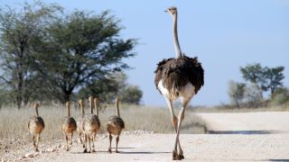

Ostriches are the largest birds alive today, with adults weighing between 200 to 300 pounds. Adult males attain a height of up to 6 feet 7 inches tall; females are slightly smaller. Their immense body size and small wings make them incapable of flying. Ostriches have a remarkable tolerance to heat, withstanding temperatures up to 132 degrees Fahrenheit without much stress. Ostriches have been domesticated for only about 150 years, and are truly only partly domesticated, or, rather, are only domesticated for a short period of their lives.
Ostriches belong to a clan (but not order) of flightless birds known as the ratites. Ratites have smooth breastbones lacking keels, the bone structures to which flight muscles would normally be attached. Other birds classified as ratites include cassowaries, kiwis, moas, and emus.
Habitat and Range
Ostriches live in Africa and thrive in a wide variety of habitats, including deserts, semi-arid plains, savannas, and open woodlands. During their five-month breeding season, these flightless birds form flocks of five to 50 individuals, often intermingling with grazing mammals such as zebras and antelopes. When breeding season is over, this larger flock breaks down into small groups of two to five birds that care for the newborn hatchlings.
Diet and Behavior
Ostriches are omnivores, and thus eat mostly plant material, though at times they may also feed on insects and small vertebrates. Although they prefer plants—particularly roots, seeds, and leaves—they also eat locusts, lizards, snakes, and rodents. They have even been known to eat sand and pebbles, which helps them grind up their food inside their gizzard, a small pouch where food is crushed and ripped up before it reaches the stomach.
Ostriches don't need to drink water; they get all the water they need from the plants they eat. However, they will drink if they come across a watering hole.
Reproduction and Offspring
Male ostriches are called cocks or roosters, and females are called hens. A group of ostriches is called a flock. Flocks can consist of up to 100 birds, though most have 10 members, according to the San Diego Zoo. The group has a dominant male and a dominant female and several other females. Lone males come and go during mating season.
Ostriches lay 3-pound eggs, which measure some 6 inches in length and 5 inches in diameter, making them the title of largest egg produced by any living bird. Males and females sit on the eggs until they hatch, between 42 and 46 days. Male and female ostriches share the responsibility of raising their young. Ostrich offspring are larger than any other bird baby. At birth, chicks can be as big as chickens.
Female Ostrich watching her nest with eggs
rontav/Getty Images
Conservation Status
According to the International Union for Conservation of Nature, ostriches are considered to be vulnerable and their population is declining, though their population is unknown. The Somali ostrich, in particular, is thought to be in rapid decline. The San Diego Zoo notes that although not threatened, the ostrich requires strict protection and farming to conserve the remaining wild populations.